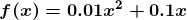
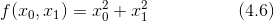
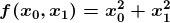
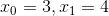

如上所示，利用微小的差分求导数的过程称为数值微分（numerical differentiation）。而基于数学式的推导求导数的过程，则用“解析性”（analytic）一词，称为“解析性求解”或者“解析性求导”。比如，y = 的导数，可以通过 解析性地求解出来。因此，当 x = 2 时，y 的导数为 4。解析性求导得到的导数是不含误差的“真的导数”。
如上所示，利用微小的差分求导数的过程称为数值微分（numerical differentiation）。而基于数学式的推导求导数的过程，则用“解析性”（analytic）一词，称为“解析性求解”或者“解析性求导”。比如，y = 的导数，可以通过 解析性地求解出来。因此，当 x = 2 时，y 的导数为 4。解析性求导得到的导数是不含误差的“真的导数”。
梯度法使用梯度的信息决定前进的方向。本节将介绍梯度是什么、有什么性质等内容。在这之前，我们先来介绍一下导数。
假如你是全程马拉松选手，在开始的 10 分钟内跑了 2 千米。如果要计算此时的奔跑速度，则为 2/10 = 0.2［千米 / 分］。也就是说，你以 1 分钟前进 0.2 千米的速度（变化）奔跑。
在这个马拉松的例子中，我们计算了“奔跑的距离”相对于“时间”发生了多大变化。不过，这个 10 分钟跑 2 千米的计算方式，严格地讲，计算的是 10 分钟内的平均速度。而导数表示的是某个瞬间的变化量。因此，将 10 分钟这一时间段尽可能地缩短，比如计算前 1 分钟奔跑的距离、前 1 秒钟奔跑的距离、前 0.1 秒钟奔跑的距离……这样就可以获得某个瞬间的变化量（某个瞬时速度）。
综上，导数就是表示某个瞬间的变化量。它可以定义成下面的式子。
式（4.4）表示的是函数的导数。左边的符号 表示 f（x）关于 x 的导数，即 f（x）相对于 x 的变化程度。式（4.4）表示的导数的含义是，x 的“微小变化”将导致函数 f（x）的值在多大程度上发生变化。其中，表示微小变化的 h 无限趋近 0，表示为 。
接下来，我们参考式（4.4），来实现求函数的导数的程序。如果直接实现式（4.4）的话，向 h 中赋入一个微小值，就可以计算出来了。比如，下面的实现如何？
# 不好的实现示例
def numerical_diff(f, x):
h = 10e-50
return (f(x+h) - f(x)) / h
函数 numerical_diff(f, x) 的名称来源于数值微分 1的英文 numerical differentiation。这个函数有两个参数，即“函数 f”和“传给函数 f 的参数 x”。乍一看这个实现没有问题，但是实际上这段代码有两处需要改进的地方。
1所谓数值微分就是用数值方法近似求解函数的导数的过程。——译者注
在上面的实现中，因为想把尽可能小的值赋给 h（可以话，想让 h 无限接近 0），所以 h 使用了 10e-50（有 50 个连续的 0 的“0.00 ... 1”）这个微小值。但是，这样反而产生了舍入误差（rounding error）。所谓舍入误差，是指因省略小数的精细部分的数值（比如，小数点第 8 位以后的数值）而造成最终的计算结果上的误差。比如，在 Python 中，舍入误差可如下表示。
>>> np.float32(1e-50) 0.0
如上所示，如果用 float32 类型（32 位的浮点数）来表示 1e-50，就会变成 0.0，无法正确表示出来。也就是说，使用过小的值会造成计算机出现计算上的问题。这是第一个需要改进的地方，即将微小值 h 改为 10-4。使用 10-4 就可以得到正确的结果。
第二个需要改进的地方与函数 f 的差分有关。虽然上述实现中计算了函数 f 在 x+h 和 x 之间的差分，但是必须注意到，这个计算从一开始就有误差。如图 4-5 所示，“真的导数”对应函数在 x 处的斜率（称为切线），但上述实现中计算的导数对应的是 (x + h) 和 x 之间的斜率。因此，真的导数（真的切线）和上述实现中得到的导数的值在严格意义上并不一致。这个差异的出现是因为 h 不可能无限接近 0。
如图 4-5 所示，数值微分含有误差。为了减小这个误差，我们可以计算函数 f 在 (x + h) 和 (x - h) 之间的差分。因为这种计算方法以 x 为中心，计算它左右两边的差分，所以也称为中心差分（而 (x + h) 和 x 之间的差分称为前向差分）。下面，我们基于上述两个要改进的点来实现数值微分（数值梯度）。
图 4-5 真的导数（真的切线）和数值微分（近似切线）的值不同
def numerical_diff(f, x):
h = 1e-4 # 0.0001
return (f(x+h) - f(x-h)) / (2*h)
现在我们试着用上述的数值微分对简单函数进行求导。先来看一个由下式表示的 2 次函数。
用 Python 来实现式（4.5），如下所示。
def function_1(x):
return 0.01*x**2 + 0.1*x
接下来，我们来绘制这个函数的图像。画图所用的代码如下，生成的图像如图 4-6 所示。
import numpy as np
import matplotlib.pylab as plt
x = np.arange(0.0, 20.0, 0.1) # 以0.1为单位，从0到20的数组x
y = function_1(x)
plt.xlabel("x")
plt.ylabel("f(x)")
plt.plot(x, y)
plt.show()
图 4-6  的图像
我们来计算一下这个函数在 x = 5 和 x = 10 处的导数。
>>> numerical_diff(function_1, 5) 0.1999999999990898 >>> numerical_diff(function_1, 10) 0.2999999999986347
这里计算的导数是 f(x) 相对于 x 的变化量，对应函数的斜率。另外， 的解析解是 。因此，在 x = 5 和 x = 10 处，“真的导数”分别为 0.2 和 0.3。和上面的结果相比，我们发现虽然严格意义上它们并不一致，但误差非常小。实际上，误差小到基本上可以认为它们是相等的。
现在，我们用上面的数值微分的值作为斜率，画一条直线。结果如图 4-7 所示，可以确认这些直线确实对应函数的切线（源代码在 ch04/gradient_1d.py 中）。
图 4-7 、 处的切线：直线的斜率使用数值微分的值
接下来，我们看一下式 (4.6) 表示的函数。虽然它只是一个计算参数的平方和的简单函数，但是请注意和上例不同的是，这里有两个变量。

这个式子可以用 Python 来实现，如下所示。
def function_2(x):
return x[0]**2 + x[1]**2
# 或者return np.sum(x**2)
这里，我们假定向参数输入了一个 NumPy 数组。函数的内部实现比较简单，先计算 NumPy 数组中各个元素的平方，再求它们的和（np.sum(x**2) 也可以实现同样的处理）。我们来画一下这个函数的图像。结果如图 4-8 所示，是一个三维图像。
图 4-8  的图像
现在我们来求式（4.6）的导数。这里需要注意的是，式（4.6）有两个变量，所以有必要区分对哪个变量求导数，即对  和
和  两个变量中的哪一个求导数。另外，我们把这里讨论的有多个变量的函数的导数称为偏导数。用数学式表示的话，可以写成 、。
两个变量中的哪一个求导数。另外，我们把这里讨论的有多个变量的函数的导数称为偏导数。用数学式表示的话，可以写成 、。
怎么求偏导数呢？我们先试着解一下下面两个关于偏导数的问题。
问题 1：求  时，关于 的偏导数 。
>>> def function_tmp1(x0): ... return x0*x0 + 4.0**2.0 ... >>> numerical_diff(function_tmp1, 3.0) 6.00000000000378
问题 2：求 时，关于 的偏导数 。
>>> def function_tmp2(x1): ... return 3.0**2.0 + x1*x1 ... >>> numerical_diff(function_tmp2, 4.0) 7.999999999999119
在这些问题中，我们定义了一个只有一个变量的函数，并对这个函数进行了求导。例如，问题 1 中，我们定义了一个固定 = 4 的新函数，然后对只有变量 的函数应用了求数值微分的函数。从上面的计算结果可知，问题 1 的答案是 6.00000000000378，问题 2 的答案是 7.999999999999119，和解析解的导数基本一致。
像这样，偏导数和单变量的导数一样，都是求某个地方的斜率。不过，偏导数需要将多个变量中的某一个变量定为目标变量，并将其他变量固定为某个值。在上例的代码中，为了将目标变量以外的变量固定到某些特定的值上，我们定义了新函数。然后，对新定义的函数应用了之前的求数值微分的函数，得到偏导数。